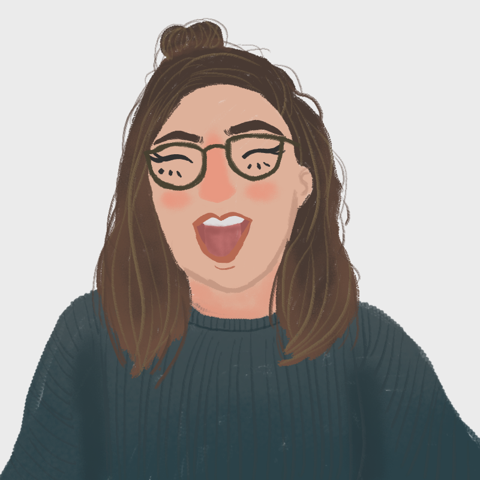
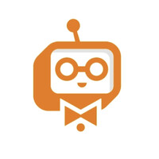

Michi Wong
Oxford MSc in Social Data Science · NYU Sociology and Data Science
01
About

I'm currently a Product Data Science Intern at Upwork, where I use causal inference and statistical modeling to explain how users find, adopt, and stick with the product. I recently finished an MSc in Social Data Science at the University of Oxford, and before that I studied Sociology, Data Science, and Creative Writing at NYU. My work sits at the intersection of the social and data sciences, using machine learning, NLP, and sociological theory to study how people form identities, how they behave in digital spaces, and how their ideas spread online.
More about me →
02
Product Data Science InternExperience
Upwork · August 2026 – Present Graduate Researcher
Oxford Internet Institute · October 2025 – August 2026 Panel Host/Coordinator of Trust and Safety
Connected Life Summit · August 2025 – August 2026 AI/Computer Vision Researcher
Structured AI · March 2026

User Research and Product Launch InternEagor · May 2025 – August 2025 Senior Honors Undergraduate Researcher
NYU Department of Sociology · August 2024 – May 2025 Leadership for Change Intern
Museum of the African Diaspora · June 2024 – August 2024
03
Foreclosing the Argument
MSc thesis on how humans and LLMs annotate thought-terminating clichés in online discourse
Detecting Gen-Z Language Register
A comparative evaluation of six classifiers for detecting Gen-Z register in text
The Gail's Effect
A difference-in-differences study on café openings and gentrification in London
F1's Parenthood Tax
A quasi-experimental study on whether Formula 1 drivers slow down after parenthood
GANNI Consumer Research Survey
A market and consumer research survey on jelly shoe brand perception for the fashion label GANNI
See all projects →